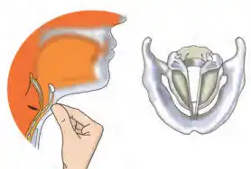

-

- In humans, the sound is produced by the voice box or the larynx. It is at the upper end of the windpipe. Two vocal cords are stretched across the voice box or larynx in such a way that it leaves a narrow slit between them for the passage of air. When the lungs force air through the slit, the vocal cords vibrate, producing sound.
- Muscles attached to the vocal cords can make the cords tight or loose.
- When the vocal cords are tight and thin, the type or quality of voice is different from that when they are loose and thick.
- The vocal cords in males are of the length of 20 mm and in females have 15mm long vocal cords. Where as Children have very short-length vocal cords. Hence, the voice quality and their type are always different in women, men and children.
Need of The Voice Box
The voice box of our body performs many functions as given below-
- It is responsible for starting or keep the communication process continue.
- It also helps in gulping the chewed food.
- It also helps in the breathing process by giving way to oxygen and carbon dioxide pass through it, which ultimately helps in the smooth functioning of the respiration process.